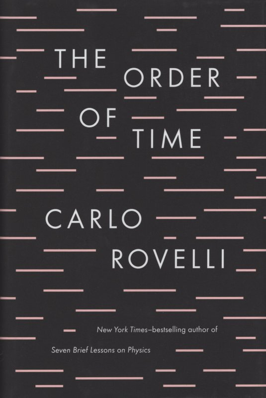

My history with books
I was not a big reader growing up, but by the age of 16-17 I had grown a love for books. Now I am a literal book dragon, who enjoys reading and even with a hectic schedule as a grad student I make sure to find some time to smell the pages of my books. Wherever I have travelled and lived, I've always managed to create a bookshelf. In this picture you can find some books I have loved over the years.

Currently reading
I am currently reading the following books
"Our blurred and indeterminate image of reality determines a variable, thermal time that turns out to have certain peculiar properties which begin to resemble what we call "time": it is in the correct relation with equilibrium states."
“Friendship is friendship, and charity is charity.... the people who give you charity are never your friends. It is not possible to receive charity from a friend.”